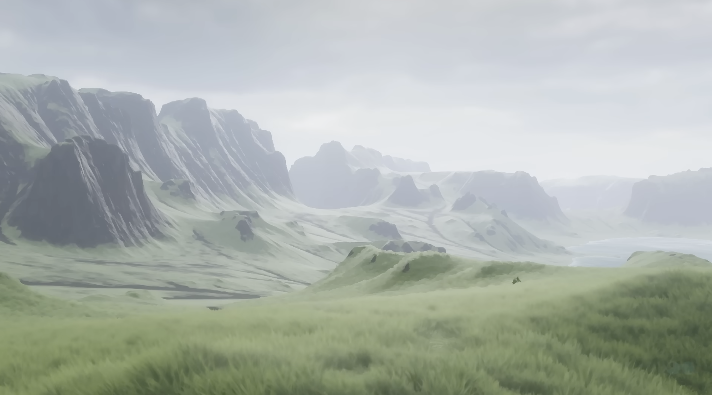
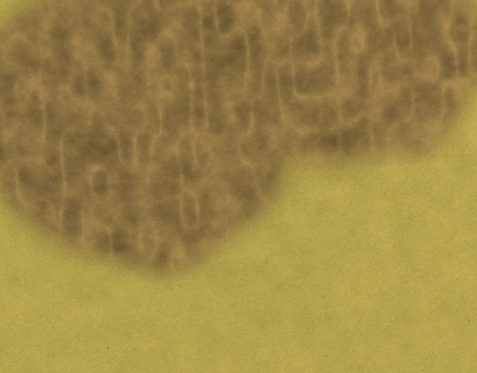

Left: the reference target (assets/target-battle-map.png) — a cool,
foggy highland valley. Right: today's committed battle-terrain render. The
reconciliation below is the proposal to lock with
David (grilling Q1): neutral material albedos plus two swappable
environment presets. The hex chips are starting proposals, not final —
tune them here before writing any shader.


These are albedos under neutral daylight, not final lit pixels.
The warm battle-*.jpg shots and the cool
battle-overcast-highland.png shot should be reachable from the same
material chips by changing the environment preset. Ship two presets in Slice 06:
overcast-foggy as highland-valley's
default, and golden-hour for Aegean parity. Do not
bake amber, cold grey, or fog into base colors; keep near-field materials alive,
then let aerial perspective mute them toward the horizon.